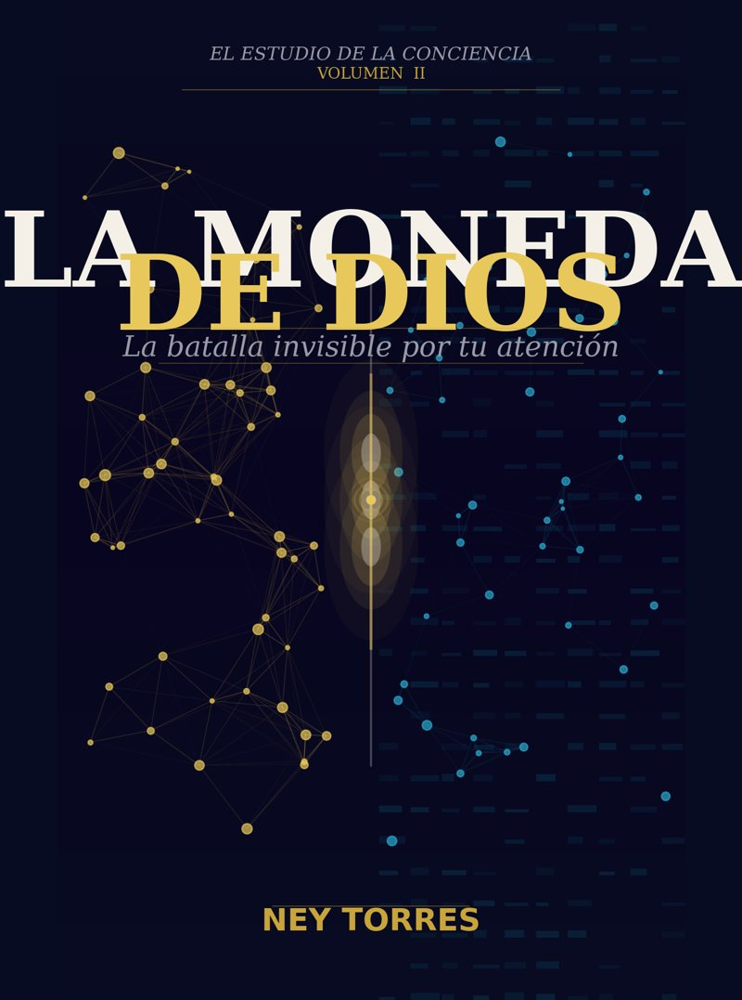

Hongos, inteligencia artificial y la batalla por tu atención
Dos dioses. Una moneda. Y esa moneda eres tú.
Descargar el PDF ↓Dos inteligencias compiten en silencio por lo único que de verdad te pertenece: tu atención. Una lleva más de mil millones de años perfeccionando su oficio bajo el suelo del bosque: el reino de los hongos. La otra es joven, vive en tu bolsillo y aprende de ti a cada segundo: la inteligencia artificial que ordena tu feed.
Ney Torres une la psicología profunda de Carl Jung con la neurociencia de la atención para responder una pregunta que casi nadie formula: ¿quién quiere tu mente y qué está dispuesto a hacer para conseguirla?
No es un libro contra las pantallas ni un manifiesto psicodélico. Es un mapa: no te dice a dónde ir, te dice dónde estás parado.
Este es un manuscrito antes de su publicación. Tu lectura me sirve para pulirlo. No necesitas ser experto: me importa tu experiencia honesta como lector.
Envíame tus notas respondiendo al mensaje con el que recibiste este enlace. Si el PDF se actualiza, este mismo botón descargará siempre la versión más reciente.
Descargar el PDF ↓Cuando el libro salga en Amazon te enviaré el enlace. Si lo leíste, una reseña honesta de una o dos líneas es la mayor ayuda que puede recibir un autor independiente: decide si el libro llega o no a lectores que no me conocen.
No tiene que ser positiva. Tiene que ser tuya.